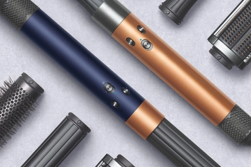

Новая насадка фена Дайсон для борьбы
с пушащимися волосами.
Эффект Коанда - это термин, который используют в своей работе стилисты. Этого эффекта можно достичь с использованием стайлера и фена Dyson. Он основан на технологии создания причесок без использования дополнительных аксессуаров, зажимов и заколок. Уложить волосы можно благодаря мощному потоку воздуха.

Ранее эффект Коанда был задействован только в цилиндрических насадках стайлера. Сейчас же есть насадка с режимом Коанда для фена. В 2022 году производитель выпустил новую модель стайлера, где все насадки работают по технологии Коанда. Это существенно экономит время на укладкуРанее эффект Коанда был задействован только в цилиндрических насадках стайлера. Сейчас же есть насадка с режимом Коанда для фена. В 2022 году производитель выпустил новую модель стайлера, где все насадки работают по технологии Коанда. Это существенно экономит время на укладку
Подобного эффекта можно достичь только при использовании техники Дайсон, другие бренды не смогли ее внедрить в свои устройства по уходу за волосами. Этого удалось достичь за счет того, что инженеры компании посвятили несколько лет разработке продукта. Все гаджеты для ухода за волосами от Dyson отличаются высокой технологичностью, а поэтому ими комфортно пользоваться и управлять.
Волоски примагничиваются к девайсу без участия человека. Стайлер имеет 6 потоков воздуха, за счет чего волосы притягиваются и удается достичь максимального объема. В результате удается быстро создать аккуратную прическу, откуда не будут торчать волоски. В 2022 году бренд Dyson выпустил насадку для фена с эффектом Коанда, которая справляется со всеми торчащими волосками. Сушить волосы стало еще проще и быстрее
27.09.2023
Статьи по теме
-

Отличия фенов модели HD07 от HD03?
18/06/2023
-
Уход за волосами в холодное время года
18/06/2023
-
Как работает выпрямитель Dyson
18/06/2023